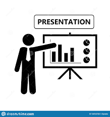

سهولة وسرعة
تقوم مؤسسة حمدان حمد العديني بتخليص بضائعكم من ميناء جدة الإسلامي أو ميناء الملك عبدالله برابغ بسرعة و سهولة وذلك بإدارة خبراء من فرق العمل الجمركي ,كل ما عليكم هو التواصل معنا

سرعة وخبرة المؤسسة
مؤسسة ” حمدان حمد العديني ” اتخذت شعارا لها جعلها في مقدمة الشركات العاملة في التخليص الجمركي وهو السرعة والانجاز . خبرة المؤسسة الطويلة خلال ال 12 عاما التي قضتها في خدمة عملائها جعلتها تدرك الكثير في مجال التخليص الجمركي
فريق عمل علي أعلي مستوي
أهم ما يميز المؤسسة هو فريق العمل الذي يحمل خلفية متميزة في مجال التخليص الجمركي ، وكذلك لديه الكثير من الحلول المبتكرة للعمليات المرتبطة بالتخليص الجمركي . تقدم الشركة خدمات مختلفة من تخليص جمركي ، واستشارات جمركية ، ،
كيف تختار مكتب تخليص جمركي مناسب في 2020؟
إختيار مكتب تخليص جمركي مناسب يعتبر الطريق المختصر لإتمام كافة عمليات الاستيراد والتصدير، حيث يلجأ العديد من المستثمرين الي أي مكتب تخليص جمركي لإتمام إجراءات تخليص المعاملات الجمركية عن بضائعهم في أسرع وقت ممكن حتي يكون لهم حرية التصرف في بضائعهم، ومن الجدير بالذكر ان آلية عمل مكاتب تخليص المعاملات الجمركية في المملكة العربية السعودية تعتمد بشكل أساسي على التعاون المتبادل بين شركات او مكاتب تخليص المعاملات الجمركية وبين الهيئة العامة للجمارك السعودية، ويتم ذلك عن طريق الالتزام بالتشريعات الموضوعة من خلال الهيئة في كافة اعمال تلك المكاتب والتعاون مع السلطات الجمركية في احباط كل محاولات تهريب البضائع داخل وخارج المملكة العربية السعودية. تعمل أيضا شركات ومكاتب تخليص المعاملات الجمركية في إطار قانوني معين لا يجب ان يخرج عن القوانين والتشريعات الموضوعة من قبل حكومة المملكة، فإذا حدث وتجاوز احد المكاتب تلك القوانين يتم إيقاف هذا المكتب وسحب ترخيص مزاولة المهنة منه واحالته الي التحقيق ومعاقبة المسئولين فيه بموجب القانون.
إختيار مكتب تخليص جمركي مناسب يعتبر الطريق المختصر لإتمام كافة عمليات الاستيراد والتصدير، حيث يلجأ العديد من المستثمرين الي أي مكتب تخليص جمركي لإتمام إجراءات تخليص المعاملات الجمركية عن بضائعهم في أسرع وقت ممكن حتي يكون لهم حرية التصرف في بضائعهم، ومن الجدير بالذكر ان آلية عمل مكاتب تخليص المعاملات الجمركية في المملكة العربية السعودية تعتمد بشكل أساسي على التعاون المتبادل بين شركات او مكاتب تخليص المعاملات الجمركية وبين الهيئة العامة للجمارك السعودية، ويتم ذلك عن طريق الالتزام بالتشريعات الموضوعة من خلال الهيئة في كافة اعمال تلك المكاتب والتعاون مع السلطات الجمركية في احباط كل محاولات تهريب البضائع داخل وخارج المملكة العربية السعودية.
تعمل أيضا شركات ومكاتب تخليص المعاملات الجمركية في إطار قانوني معين لا يجب ان يخرج عن القوانين والتشريعات الموضوعة من قبل حكومة المملكة، فإذا حدث وتجاوز احد المكاتب تلك القوانين يتم إيقاف هذا المكتب وسحب ترخيص مزاولة المهنة منه واحالته الي التحقيق ومعاقبة المسئولين فيه بموجب القانون.